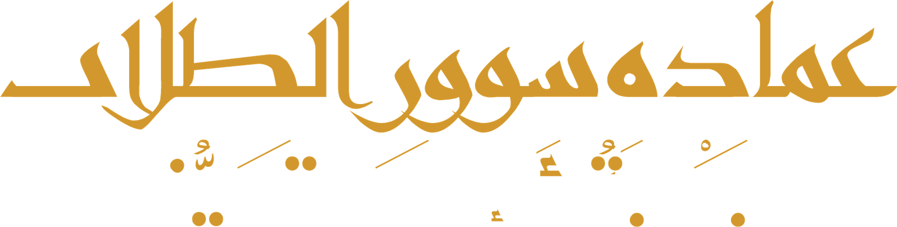

الملخص الدوري لتجربة استباق
مسار التجربة: على المسار ولا يوجد ما يستدعي التصعيد للجنة العليا
أين وصلنا
9 من 12 شهرًا
أربع بوابات من خمس
أخطر عشرين مقطعًا
3 عولجت
7 قيد المعالجة، و20 دُرست
صدق الإنذار
9 من 14
حادثًا وقعت في مقاطع صُنّفت مرتفعة أو أعلى قبل وقوعها
جاهزية البيانات
5 من 7
مجموعات بيانات مكتملة
قرارات تنتظر سموكم
| القرار | توصية اللجنة | الموعد |
|---|---|---|
| توجيه سموكم بمعالجة ثلاثة مقاطع من قائمة الأخطر | معالجة مؤقتة باللوحات وتهدئة السرعة، تنفذها الجهة المختصة | خلال شهر |
| توجيه بإكمال مشاركة البيانات | تعميم من الإمارة لجميع الجهات الشريكة باستكمال المشاركة | عاجل |
أبرز ما حدث هذا الشهر
- ثلاث ليالٍ بلغ فيها المؤشر المستوى الحرج، ونُفّذ الإجراء المتفق عليه في الثلاث.
- في ليلة غبار مع خروج المدارس رُفع المستوى قبل نحو ساعتين، وتقدمت وحدتان إلى نقاط التمركز.
- اكتمل تدريب المناوبين على المحور الثاني، واستمر التشغيل دون أعطال مؤثرة.
ما لا يعرضه الملخص: أداء جهة بعينها أو ترتيبًا بين الجهات، ولا تنبيهات لحظية، ولا نسب انخفاض للوفيات قبل قرار الشهر 12، ولا أي بيانات شخصية. والتفاصيل التشغيلية لدى إدارة المرور.
مؤشرات أولية، وقرار الأثر في الشهر 12يُعدّه أمين سر اللجنة، ويعتمده رئيسها قبل رفعه